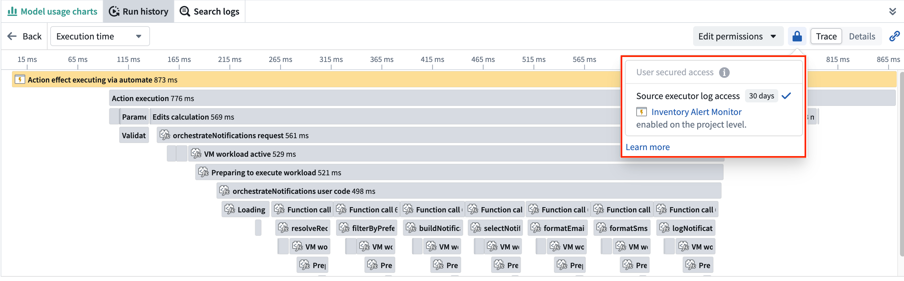
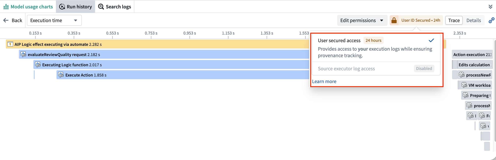
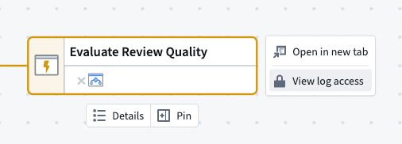
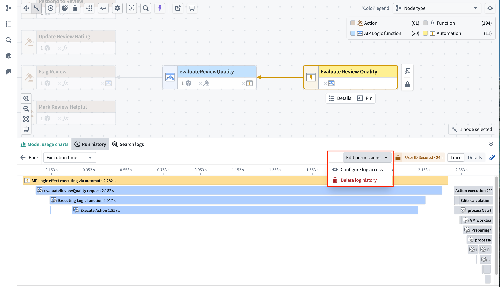
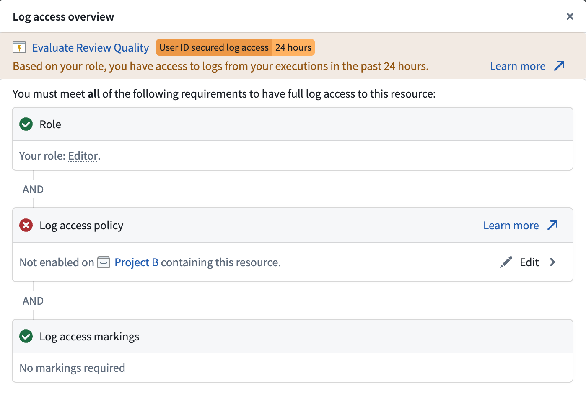

:::callout{theme="warning"} Service and trace logs can contain sensitive content from any data source a workflow reaches, including language model prompts and completions, object property values, and user-supplied inputs. The platform does not propagate markings from the source executor's resource or from any data the execution accessed; only the markings an administrator explicitly applies when enabling log access are enforced on viewers. Enabling log access therefore carries a security risk and should be reviewed against the maximum sensitivity of data the workflow may touch. :::
The following table lists the required roles for various operations in Ontology and AIP observability.
| Capability | Required role |
|---|---|
| View metrics | View permission on the resource¹ |
| View run history | Edit permission on the resource¹ |
| View trace and service logs² | Edit permission on the resource¹ + Log access enabled³ + Access to all markings |
| Search logs² | Edit permission on the resource¹ + Log access enabled³ + Access to all markings |
| Configure log access | Information security officer or Enrollment administrator role |
| Delete logs | Information security officer or Enrollment administrator role |
¹A Foundry operation backs each capability: foundry-telemetry-service:read-metrics (granted by the Viewer role) for metrics, and foundry-telemetry-service:view-execution-history (granted by the Editor role) for run history and logs. You can grant these operations through a different role using custom roles.
²Users always have access to logs for their own executions from the past 24 hours with just the foundry-telemetry-service:view-execution-history operation, independent of log access settings. This exception does not apply on CBAC stacks, where log access must be enabled to see logs for one's own executions.
³Log access enablement: An administrator must enable log access either on the source executor resource directly (as a resource override) or on the source executor's project (and attributed project if the resource has been moved). See log access requirements below for full details, and Configure logging for how to enable it.
To view the run history for a resource, you must have edit permission on the resource.
To view the trace and service logs for an execution you did not invoke, you must satisfy all three requirements below. The log access overview dialog, described in Review log access requirements below, shows each requirement and whether you currently meet it.
Information security officer or Enrollment administrator enables this. See Configure logging for how to enable log access.Actions are a special case. An action managed by legacy Ontology permissions cannot yet be managed at the project level, so enabling log access for it requires a resource-level override rather than the project setting, until the action is migrated to project-based permissions. See Configure logging for details.
The Run history and Log search panels in Workflow Lineage display a status tag for the source executor's log access. The tag reflects your current level of access:
When log access is enabled for the project and marking permissions are satisfied, Source executor log access will show as enabled. Logs will be visible for all executions originating from the enabled project.

Otherwise, only your own executions from the past 24 hours show logs (except on CBAC stacks).

:::callout{theme="warning"} On CBAC stacks, this 24-hour access to your own executions' logs is disabled. Log access must be enabled on the source executor's project before users can view trace and service logs or search logs, even for their own executions. :::
To check what you need to read logs, open the Log access overview dialog from either of these places:

Viewing the overview requires at least the Viewer role on both the resource and its project.
If you have the Information security officer or Enrollment administrator role and can manage log access for the resource, the Run history and Log search panels show Edit permissions in place of View log access. That menu adds Configure log access and Delete log history, both covered in Configure logging.

The Log access overview dialog lists the three requirements a viewer must satisfy to see logs.
Information security officer or Enrollment administrator role, you can select Edit to configure the policy (see Configure logging).
The markings that protect log content are configured explicitly by an administrator when log access is enabled. These are the only markings enforced when a user attempts to view logs.
Markings are not derived from the source executor's resource, its inputs, or any data the execution accessed. Administrators are responsible for selecting markings that reflect the maximum sensitivity of any data the workflow may touch, as the platform cannot determine the full set of data sources a workflow may reach in advance. Logs enabled without markings are visible to every user who satisfies the role and log access requirements described above.